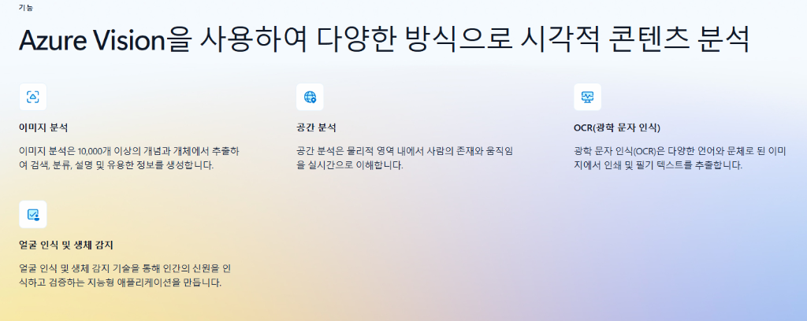

수작업으로 일일이 입력하던 여권 정보 타이핑은 이제 끝났습니다.
마우스 드래그 한 번으로 여권을 스캔하여 신속하게 엑셀로 추출합니다.
MICROSOFT CLOUD COGNITIVE ENGINE
Azure(애저)란? Microsoft가 제공하는 세계 최고 수준의 클라우드 플랫폼입니다.
이 시스템은 Azure의 최신 인공지능 엔진을 사용합니다. 업로드된 여권 이미지 속 영문 성명, 여권번호, 생년월일, 만료일 등 핵심 데이터를 인공지능이 눈으로 읽어내어 디지털 텍스트로 정확하게 변환합니다.

무거운 원본 파일도 브라우저 내부에서 스스로 최적화하여 인공지능에 안전하고 빠르게 전송합니다.
사용자 컴퓨터 리소스를 활용한 Canvas API를 통해 화질 저하 없이 원본 여권 사진을 분석에 최적화된 용량으로 자동 리사이징합니다.
별도의 서버 설치 없이 웹 브라우저 단에서 직접 PDF 문서 페이지를 JPG 이미지로 변환하여 분석 엔진에 다이렉트로 전달합니다.
해외 여권의 복잡하고 통일되지 않은 날짜 표기법을 `YYYY.MM.DD`의 한눈에 알기 쉬운 표준 형식으로 깔끔하게 포맷팅합니다.
가장 민감한 개인 정보와 인증 정보를 최첨단 암호화 기술로 분리하여 철저히 지킵니다.
인가된 사용자만 서비스를 이용할 수 있도록 친숙하고 강력한 구글 소셜 인증을 통해 안전한 접속 환경을 유지합니다.
각 사용자의 Azure API 접근키를 웹표준 최고 수준(AES-GCM)으로 브라우저 단에서 암호화한 뒤 보관하므로, 시스템 운영자나 데이터베이스가 유출되어도 절대 안전합니다.
관리자는 무분별한 접근을 실시간 모니터링하며, 비인가자 혹은 퇴사자의 권한을 대시보드에서 원클릭으로 활성화/차단할 수 있습니다.
사용자가 올리는 여권 원본 파일은 그 어떤 중간 서버에도 저장되지 않으며, 브라우저 메모리 안에서 즉각 처리되고 휘발됩니다.
사용자별 작업 통계를 실시간 수집하여, 서버 오남용을 줄이고 효율적인 비용 관리를 돕습니다.
"과도한 통신 요금이 부과되는 것을 사전에 예방하기 위해, 실사용 횟수와 작업 로그를 안전하게 로깅 및 대시보드화합니다."
오늘 / 이번 달 / 누적 총계 분석 횟수를 자신의 대시보드에서 직관적으로 한눈에 확인 가능합니다.
전체 임직원의 스캔 요청 현황을 이번 달, 지난 달 또는 임의 날짜 지정을 통해 투명하게 조회하고 엑셀 분석용 리포트를 뽑아냅니다.